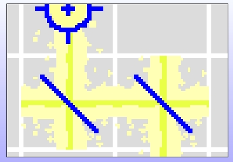

Modify this method on CellRenderer to get a 3 pixel adjustment.
renderLaserVerticalMask: aMaskForm color: aColor
| cellPosn scaledBeam scale trimmedBeam offset rotatedBeam masked |
cellPosn := self offsetWithinGridForm.
scale := CellRenderer cellExtent * 6.
scaledBeam := aMaskForm scaledToSize: scale.
trimmedBeam := Form extent: (CellRenderer cellExtent x)@(scaledBeam height) depth: scaledBeam depth.
scaledBeam
displayOn: trimmedBeam
at: 0@0
clippingBox: trimmedBeam boundingBox
rule: Form paint
fillColor: nil.
rotatedBeam := trimmedBeam rotateBy: 90.
offset := (-3 + (CellRenderer cellExtent x - rotatedBeam width) // 2)@(3 + (CellRenderer cellExtent y // 2) negated).
masked := self maskOffVerticalOn: rotatedBeam.
masked
displayOn: self targetForm
at: (cellPosn + offset)
clippingBox: self targetForm boundingBox
rule: Form oldPaint
fillColor: aColor
How did we do?
That's pretty good. We should work on masking off the non-active side of the mirror next.